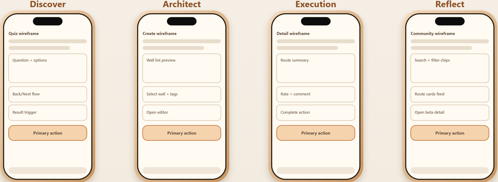

Frontend / Interface
Mobile web app, quiz interface, DIY route editor, community feed, and route detail pages.
Prototype
ClimbQuest is a mobile-first web prototype connecting three core flows: Personalized Route Recommendation, DIY Route Creation, and Community Sharing & Interaction.
Mobile web app, quiz interface, DIY route editor, community feed, and route detail pages.
Quiz answers, recommendation result, selected holds, route metadata, likes, comments, and try actions.
Vercel live app and GitHub repository for access, review, and version control.
These wireframes helped us test navigation structure and how the three core flows connect before visual refinement.

The high-fidelity prototype is deployed as a live web app. Users can access ClimbQuest through the link or QR code below and interact with the three core flows.
Best viewed on mobile or in mobile browser mode.
Implements DG1 -> R1: Reduce route-selection uncertainty
Linked evidence: users were unsure which route fits them.
Users complete a playful quiz and receive route suggestions based on preference, confidence, and goals.
Implements DG2 -> R2: Increase creative ownership
Linked evidence: users wanted more autonomy and creative involvement.
Users select holds on a wall image, connect them into a route path, and add route details.
Implements DG3 -> R3: Support social motivation
Linked evidence: users lacked motivation and peer feedback.
Users browse routes shared by others, open route details, like/comment, and try shared routes.